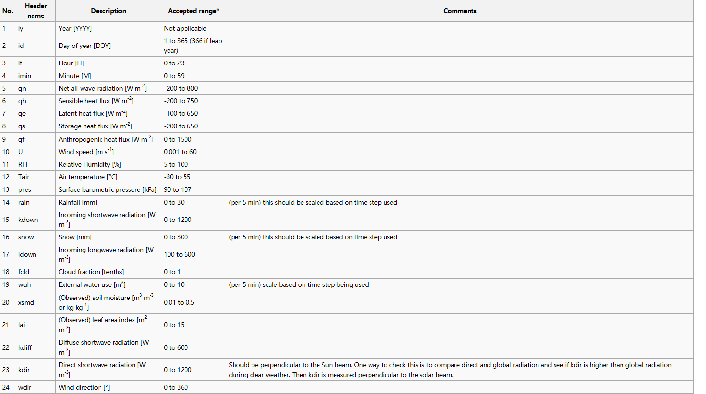

3. Pre-Processor¶
3.1. Meteorological Data: MetPreprocessor¶
Contributors/Developers：
Fredrik Lindberg
Introduction：
- MetPreprocessor can be used to transform required temporal meteorological data into the format used in UMEP. The following variables are usually required as a minimum: air temperature, relative humidity, barometric pressure, wind speed, incoming shortwave radiation and rainfall; if available, other variables can be supplied as well.Input data can include any number of header lines and should be separated by conventional separators (e.g. comma, space, tab, etc). The output format is space-separated and includes time-related variables of year, day of year, hour and minute. The plugin is able to process other input time formats including month, day of month, etc.
Location：
- The Meteorological data pre-processor is located at
- UMEP
- Pre-processor
- Meteorological data
Dialog box：

Interface for inputting an ascii data file into the correct format for SUEWS
top input DEM data is specified middle upper input polygon with height data or OSM is specified middle map extent is specified middle lower to specify the output DSM and output resolution bottom to run the calculations - Variables included in UMEP meteorological input file：
- if acceptable range is not reasonable (i.e. beyond the limits we have set) please contact
No.HeadernamedDescriptionAcceptedrange*Comments1 iy Year [YYYY] Not applicable 2 id Day of year [DOY] 1 to 365(366 if leap year)3 it Hour [H] 0 to 23 4 imin Minute [M] 0 to 59 5 qn Net all-wave radiation [W m-2] -200 to 800 6 qh Sensible heat flux [W m-2] -200 to 750 7 qe Latent heat flux [W m-2] -100 to 650 8 qs Storage heat flux [W m-2] -200 to 650 9 qf Anthropogenic heat flux [W m-2] 0 to 1500 10 U Wind speed [m s-1] 0.001 to 60 11 RH Relative Humidity [%] 5 to 100 12 Tair Air temperature [°C] -30 to 55 13 pres Surface barometric pressure [kPa] 90 to 107 14 rain Rainfall [mm] 0 to 30 (per 5 min) this should be scaled based on time step used 15 kdown Incoming shortwave radiation [W m-2] 0 to 1200 16 snow Snow [mm] 0 to 300 (per 5 min) this should be scaled based on time step used 17 ldown Incoming longwave radiation [W m-2] 100 to 600 18 fcld Cloud fraction [tenths] 0 to 1 19 wuh External water use [m:sup:3] 0 to 10 (per 5 min) scale based on time step being used 20 xsmd (Observed) soil moisture[m:sup:3 m-3 or kg kg-1]0.01 to 0.5 21 lai (Observed) leaf area index [m:sup:2 m-2] 0 to 15 22 kdiff Diffuse shortwave radiation [W m-2] 0 to 600 23 kdir Direct shortwave radiation [W m-2] 0 to 1200 Should be perpendicular to the Sun beam. One way to check this is to compare direct and global radiation and see if kdir is higher than global radiation during clear weather. Then kdir is measured perpendicular to the solar beam. 24 wdir Wind direction [°] 0 to 360 
Remarks：
If decimal time is ticked in, day of year column must be stated and the decimal time column should be numbers between 0 and 1.
If you have problems with importing a data set. Do a time series plot using small points. Check (1) are there any data gaps (there can be no gaps) (2) are the columns lined up throughout the data setes (e.g if variable suddenly changes incorrectly, you may have columns misaligned).
Gapfilling - there are a number of techniques that can be used for this 1. A fast way to get started (you can come back and refine to a more appropriate method)
- Linear fit between one or two missing periods using the data on either
- Create diurnal average for each variabel for short periods (e.g. 2 weeks) and use these values to fill missing data
3.2. Meteorological Data: Download data (WATCH)¶
Contributors：
Andy Gabey (University of Reading), Ting Sun (Reading), Helen Ward (Reading), Lingbo Xue (Reading), Zhe Zhang (Reading), Tom Kokkonen (University of Helsinki), Leena Järvi (Helsinki), Sue Grimmond
- Introduction：
- Basic meteorological variables are required for most applications in the UMEP processor. If observed data are not available for a particular location, the global WATCH forcing datasets (Weedon et al. 2011, 2014) can be used to provide this information.
- The WATCH data downloader allows climate reanalysis data to be extracted for a specific location and period of interest, and (optionally) transformed into annual files in a format suitable for models within UMEP.
- The WFD dataset is based on 40-year ECMWF Re-analysis data (ERA-40) and is available at half-degree resolution for 1901-2001.
- The WFDEI dataset is based on ERA-interim re-analysis data and is available at half-degree resolution for 1979-2012.
Variables available Comments Wind speed [m s-1] 10 m instantaneous Air temperature [K] 2 m instantaneous Specific humidity [kg kg-1] 2 m instantaneous Pressure [Pa] Instantaneous surface pressure Incoming shortwave radiation[W m-2]Average over previous 3 hours in WFDEI and over next3 hours in WFD, surface fluxIncoming longwave radiation[W m-2]Average over previous 3 hours in WFDEI and over next3 hours in WFD, surface fluxRainfall rate[kg m-2 s-1]Average over previous 3 hours in WFDEI and over next3 hours in WFD. CRU and GPCC bias correction options.Snowfall rate[kg m-2 s-1]Average over previous 3 hours in WFDEI and over next3 hours in WFD. CRU and GPCC bias correction options.Note: - The current downscaling procedure only deals with WFDEI data; a module for WFD is under development. - All precipitation corrections are currently conducted based on CRU option. - Data is drawn from a subset of the full WATCH dataset that does not cover the entire globe but includes Europe and the majority of Asian countries excluding Russia at this time. More regions may be added in the future. The map below shows current coverage:

Available data in WATCH downloader (overlaid on countries)
Location: - The WATCH data pre-processor is located at:
- Obtaining WATCH data via UMEP：

Integrated WATCH data downloader: control panel
- Running the tool：
- The downloader is separated into two sections:
- Download climate data: Retrieves WATCH data for all variables for the location and period of interest. This saves a NetCDF (.nc) file that contains all variables at 3 h resolution that can be used directly by ExtremeFinder.
- Latitude and longitude: WGS84 co-ordinates of the study location. Data is extracted from the WATCH grid cell that contains these co-ordinates.
- Start time and End Time: The time range of data to be downloaded (inclusive; to the nearest month)
- Refine downloaded data: Before the WATCH data can be loaded into models such as SUEWS, it must be downscaled, separated into annual files and refined. These controls perform the refinement on the .nc file downloaded in part (1) and save the results as a text file that can be loaded into further models. The resulting file contains data at 1 hour intervals, with estimates or placeholders for meteorological variables not present in WATCH.
- Site height: Height above sea level of the desired measurement site. This applies adjustments to meteorological parameters based on the height above ground level. Data are available from 1 January 1979 to 31 December 2015.
- UTC offset: Adjusts the UTC time used in the original WATCH dataset to a local time (e.g., for Beijing time, UTC Offset = 8 h should be specified). NOTE: As of now the tool does not support half hour-timezones.
- Rain hours per 3h: Rain events in the location of interest may be very short – information that is lost because the WATCH data is produced at 3 h intervals, within which it is assumed rain is continuous. This control limits the duration of rain in the 1-hour file to 1, 2 or 3 hours within each 3 hour interval.
- Path to LQF results: Incorporates results data from the LQF model into the disaggregated data. Note that this feature produces one file per LQF grid cell and year.
- Considerations：
- Spatial resolution: The WATCH data are provided for half-degree grid boxes. In regions with substantial heterogeneity within these grid boxes data at the grid-box scale may be not be representative of your study site (e.g. mountainous regions, urban areas).
- Temporal resolution: The data are downloaded at 3 h resolution and are linearly downscaled to 1 h time steps during the refinement step, during which radiation data are corrected for sunrise/sunset.
- References：
- Kokkonen et al. (2017, in review)
- Ward et al. (2017, in review)
- Weedon GP, Gomes S, Viterbo P, Shuttleworth WJ, Blyth E, Österle H, Adam JC, Bellouin N, Boucher O and Best MJ (2011) Creation of the WATCH Forcing Data and Its Use to Assess Global and Regional Reference Crop Evaporation over Land during the Twentieth Century. Journal of Hydrometeorology 12, 823-848
- Weedon GP, Balsamo G, Bellouin N, Gomes S, Best MJ and Viterbo P (2014) The WFDEI meteorological forcing data set: WATCH Forcing Data methodology applied to ERA-Interim reanalysis data. Water Resour. Res. 50, 7505-7514 |
- Tan YS (2015) MSc Thesis, University of Reading
- Xue L (2016) MSc Thesis, University of Reading
3.3. Spatial Data: Spatial Data Downloader：：¶
Developer：
Andy Gabey (Univiersity of Reading)
- Introduction：
- The Spatial Data Downloader downloads geo-datasets useful for UMEP applications. Only the necessary section of the data is downloaded, so that disk use and download time are minimised.
- Location:
- The spatial data downloader resides at:
- UMEP
- Pre-processor
- Spatial Data
- Spatial Data Downloader
- Dialog box:

Dialog for the Spatial Data Downloader plugin
- Category and available datasets:
- Each category contains multiple datasets, which are revealed by clicking the category name. To download a dataset, select it from the list, specify the geographic extent and press “Download”
- Abstract：
- Information about the selected dataset, including citation information.
- Bounding box：
- The geographic extent of the region to download (maximum download size is 500x500 pixels in the case of raster data). The current QGIS canvas extent can also be used by clicking Use canvas extent
- Reproject to current project CRS：
- The downloaded data is saved in its original CRS by default. This option reprojects the saved data to the project CRS and performs resampling, the resolution of which is controlled by the “Pixel resolution in CRS units” box.
- Get data：
- Refreshes the catalogue of available datasets. This is also updated when QGIS starts.
- Update list:
- Refreshes the catalogue of available datasets. This is also updated when QGIS starts.
- Close:
- Closes the plugin.
3.4. Spatial Data: DSM Generator¶
Developer:
Nils Wallenberg
- Introduction:
- Digital Surface Models (DSMs) is not always available for the area you want to investigate. The DSM Generator can be used to create or alter a DSM by using information from a polygon building footprint layer where a building height attribute is available. An option to acquire building footprints, and also in some cases building height from [Open Street Map](http://www.openstreetmap.org) data, is also available.
Location: - The DSM Generator is located at
- UMEP
- Pre-Processor
- Spatial Data
- DSM Generator
- Dialog box:

Dialog sections:
| top | input DEM data is specified |
| middle upper | input polygon with height data or OSM is specified |
| middle | map extent is specified |
| middle lower | to specify the output DSM and output resolution |
| bottom | to run the calculations |
- Digital Elevation Model:
- A raster file containing elevation values needed to create the DSM
- Polygon Vector File:
- A polygon vector file including height values of buildings needed to create the DSM
- Necessary attributes:
- Building height values in meters
- Use Open Street Map:
- Tick this in if you do not have a polygon layer with building heights. Open Street Map (© OpenStreetMap contributors) data will be used instead. If no building height is found building level height will be used instead. Set to appropriate value, e.g. a three level building with building level height set to 3 will be 3 * 3 = 9 meters high.
- Save OSM as shapefile:
- Tick this in if you want to save the Open Street Map data as a polygon layer. This can be used if you want to look at what values has been used and if you want to add values manually.
- Map extent:
- Set either to map canvas extent or extent from layer. Extent have to be smaller or equal to the raster DEM extent specified in the top section.
- Digital Surface Model:
- Set output for the generated DSM. Also set output resolution.
- Run:
- Starts the calculations
- Close:
- Closes the plugin.
- Output:
- One GeoTIFF is created, a DSM.
- Remarks:
- The DEM raster and map canvas should be in a projection with meters as units.
- Raster elevation data (DEM) can be retrieved from e.g. OpenDEM.
- If you use Open Street Map make sure you read Open Street Map © OpenStreetMap contributors.
3.5. Spatial Data: Tree Generator¶
Developer:
Fredrik Lindberg
- Introduction:
- Information 3d vegetation is not a common spatial information available. The Tree Generator can be used to create or alter a vegetation CDSM and TDSM (see [abbreviations](http://urban-climate.net/umep/UMEP_Manual#Abbreviations)). Be using information from a point layer where the location of the points specifies the tree positions and the attributes sets the shape of the trees, it is possible to produce a the 3d vegetation needed for e.g. Mean radiant temperature modelling (SOLWEIG) or Urban Energy Balance modelling (SUEWS) in UMEP.
Location: - The Tree Generator is located at
- UMEP
- Pre-Processor
- Spatial Data
- Tree Generator
- Dialog box:

Dialog sections:
| top | input data is specified |
| bottom | to specify the output and to run the calculations |
- Point vector file:
- A point vector file including the appropriate attributes for generating the vegetation DSMs
- Necessary attributes:
| Tree type | Two different tree types (shapes) are currently included: 1 = conifer and 2 = decidouos.
There is also a possibility to remove vegetation by setting tree type = 0
and with an appropriate diameter to remove all vegetation pixels from the DSMs.
|
| Total height | This is the total height of the tree from the ground (magl). |
| Trunk height | This is the height up to the bottom of the canopy (magl). |
| Diameter | This is the circular diameter of the tree in meter. |
- Bollean building grid exist:
- Tick this in if a boolen building grid exist for your model domain. This can be generated from the SOLWEIG-plugin.
- Building and Ground DSM:
- A DSM consisting of ground and building heights.
- Ground DEM:
- A DEM cosisting of ground heights.
- Building grid:
- A grid where building pixels are 0 and all other pixels are 1.
- Vegetation Canopy DSM:
- A DSM consisting of pixels with vegetation heights above ground.
- Vegetation Trunk Zone DSM:
- A DSM (geoTIFF) consisting of pixels with vegetation trunk zone heights above ground.
- Output Folder:
- A specified folder where the result will be saved.
- Run:
- starts the calculations
- Close:
- closes the plugin.
- Output:
- Two geoTIFFs are created, one CDSM and one TDSM.
- Remarks:
- All DSMs need to have the same extent and pixel
- To ceate a bush, set trunk height to
- The SOLWEIG plugin cn be used to create the boolean building grid as well as a TDSM based on a
3.6. Spatial Data: LCZ Converter¶
Contributors:
Natalie Theeuwes (University of Reading), Andy Gabey (Reading), Fredrik Lindberg (Gothenburg), Sue Grimmond (Reading)
- Introduction:
- The Local climate zone (LCZ) converter calculates land cover fractions (see land cover reclassifier) on a vector grid based on LCZ raster maps from the WUDAPT portal. The local climate zone are urban area classified based on the Stewart and Oke (2012) scheme.
- The raster LCZ maps can be converted into maps of land cover fraction and morphometric properties. For this conversion we use paved, building and pervious fraction for each LCZ from Stewart et al. (2014). However, what exactly the pervious fraction consists of (grass, trees, bare soil or water) needs to be user-specified. Similarly, morphometric properties for the buildings are specified in this scheme, but the vegetation morphometric properties still need to be specified by the user.

The definition of the different local climate zones (LCZ)
Note: In UMEP we refer to the rural LCZ’s as 101, 102, 103, 104, 105, 106 and 107 instead of A, B, C, D, E, F and G.
Location: - The Tree LCZ converter is located at
- UMEP
- Pre-Processor
- Spatial Data
- LCZ converter
- Dialog box:
- The first tab in the LCZ converter dialog shows a table. This table includes land cover fractions and morphometric properties for buildings and vegetation for each local climate zone. If the default values in the table are not appropriate for the selected city the user has a choice between editing the table directly or using the “pervious distribution” tab in order to provide approximate values for the distribution between grass, bare soil, trees and water and the height of the vegetation.
- Within the “pervious distribution” tab there are two options to change the pervious fraction distribution: Either per LCZ using the “Separate LCZ’s” button or for all LCZ’s together using “Same for all LCZ’s”. When selecting the first option make sure to select the LCZ raster first. Based on the LCZ raster, the dropdown boxes will show the LCZ classes ordered by the frequency of occurrence. Select the classes to specify the pervious distributions for and select the most appropriate pervious land cover options and vegetation heights.
- When choosing the “Same for all LCZ’s” option: choose the appropriate pervious land cover fractions and vegetation heights for all urban and all rural LCZ classes.


Dialog sections:
| upper | Select the LCZ raster layer and the vector grid the land cover
fractions should be computed for.
|
| middle Tab: Pervious distribution | Set the distribution of pervious surface fractions for
each LCZ separately or all at the same time.
|
| middle Tab: Table | Alters the land cover fractions and building and
vegetation heights for each LCZ towards more accurate values.
|
| lower | Specify output and run the calculations. |
- LCZ raster:
- Select the LCZ raster from the [WUDAPT database.](http://www.wudapt.org)
- Vector grid:
- Select your predefined polygon grid (see Vector -> Research Tools -> Vector Grid; select polygons not lines)
- Adjust default parameters:
- Tick this box if you would like to edit the table below with the land use fractions and tree and building heights for each of the local climate zones.
- Separate LCZ’s:
- Once selected it computes the most common LCZ classes in the Raster grid and allows you to alter the pervious fractions and tree heights in the dropdown boxes to the right for each individual LCZ.
LCZ’s: Fraction distributions: Select the percentages of each pervious land cover class for the selected LCZ. Height of trees: Select the range of tree heights most applicable for that LCZ. Note for rural classes you are only able to specify the distribution of tree species. For more detailed distribution of pervious fractions, please alter the table.
- Same for all LCZ’s:
- Allows you to alter the pervious fractions and tree heights for all urban and rural classes at the same time.
| Urban: | Select the percentages of each pervious land cover class for all urban LCZ’s. |
| Rural: | Select the percentages of each pervious land cover class for all rural LCZ’s.
Note for rural classes you are only able to specify the distribution of tree species.
|
| Height of trees: | Select the range of tree heights most applicable for the urban and rural LCZ’s. |
For more detailed distribution of pervious fractions, please alter the table.
- Update Table:
- This updates the table from the default values to the user-specified distributions of the pervious fractions. Please check the table, to make sure your changes have taken effect.
- File Prefix:
- A prefix that will be included in the beginning of the output files.
- Add results to polygon grid:
- Tick this in if you would like to save the results in the attribute table for your polygon vector grid.
- Output Folder:
- A specified folder where result will be saved.
- Run:
- Starts the calculation
- Close:
- Closes the plugin.
- Output:
- Three files are saved after a successful run.
- One with the landcover fractions for each grid cell
- One with the morphometric properties for the building for each grid cell
- One with the morphometric properties for vegetation for each grid cell
- Remarks:
- Rural LCZ’s are marked as 101, 102, etc instead of A, B, etc.
- Issues using .sdat rasters has been reported. GeoTiffs are recommended.
- References:
- Stewart, I.D. and Oke, T.R. 2012. Local Climate Zones for urban temperature studies. Bulletin of the American Meteorological Society, 93: 1879-1900.
- Stewart, I.D., Oke, T.R., and E.S. Krayenhoff. 2014. Evaluation of the ‘local climate zone’ scheme using temperature observations and model simulations. International Journal of Climatology, 34: 1062-80.
3.7. Urban Geometry: Sky View Factor Calculator¶
Contributor:
Fredrik Lindberg (Gothenburg), Sue Grimmond
- Introduction:
- The Sky View Factor plugin can be used to generate pixel wise sky view factor (SVF) using ground and building digital surface models (DSM). Optionally, vegetation DSMs could also be used. By definition, SVF is the ratio of the radiation received (or emitted) by a planar surface to the radiation emitted (or received) by the entire hemispheric environment (Watson and Johnson 1987). It is a dimensionless measure between zero and one, representing totally obstructed and free spaces, respectively. The methodology that is used to generate SVF here is described in Lindberg and Grimmond (2010).
Location: - The Sky View Factor Calculator is located at
- UMEP
- Pre-Processor
- Urban Geometry
- Sky View Factor
- Dialog box:

Dialog sections:
| top | Specify input data |
| bottom | Specify output data and run calculation |
- Building and Ground DSM:
- A DSM (geoTIFF) consisting of ground and building heights.
- Vegetation Canopy DSM:
- A DSM (geoTIFF) consisting of pixels with vegetation heights above ground. Pixels where no vegetation is present should be set to zero.
- Vegetation Trunk Zone DSM:
- A DSM (geoTIFF) consisting of pixels with vegetation trunk zone heights above ground. Pixels where no vegetation is present should be set to zero.
- Use Vegetation DSMs:
- Tick this box if you want to include vegetation (trees and bushes) in the final SVF.
- Trunk Zone DSM Exist:
- Tick this box if a trunk zone DSM already exists.
- Transmissivity of Light Through Vegetation (%):
- Percentage of light that is penetrating through vegetation. The default value is set to 3 % according to Konarska et al. (2013).
- Percentage of Canopy height:
- If a trunk zone vegetation DSM is absent, this can be generated based on the height of the Canopy DSM. The default percentage is set to 25%.
- Output Folder:
- Specify folder where results will be saved.
- Run:
- Starts the calculations.
- Add Result to Project:
- If ticked, the total SVF raster will be added to the map canvas.
- Close:
- Closes the plugin.
- Output:
- 16 files (geoTIFF) will be saved if vegetation DSM is used. Otherwise, 5 SVFs are saved.
File Description SkyViewFactor.tif Total SVF, i.e. amount of sky that is seen from each pixel. SVF different directions Four cardinal points SVF different directions | Four cardinal points |
- Example:

Example of (left) input data - ground and building DSM (grayscale), DSM overlaid with a canopy DSM (yellow to green). Right: the resulting SVF -light highest SVF
Remarks:
- All DSMs need to have the same extent and pixel size.
- This plugin is computationally intensive i.e. large grids will take a lot of time and very large grids will not be possible to use. Large grids e.g. larger than 4,000,000 pixels should be tiled before.
- References:
- Konarska J, Lindberg F, Larsson A, Thorsson S, Holmer B (2013). Transmissivity of solar radiation through crowns of single urban trees—application for outdoor thermal comfort modelling. Theoret. Appl. Climatol., 1–14
- Lindberg F, Grimmond CSB (2010) Continuous sky view factor maps from high resolution urban digital elevation models. Clim Res 42:177–183
- Lindberg, F., Grimmond, C.S.B., 2011a. The influence of vegetation and building morphology on shadow patterns and mean radiant temperatures in urban areas: model development and evaluation. Theoret. Appl. Climatol. 105, 311–323
- Watson ID, Johnson GT (1987) Graphical estimation of skyview-factors in urban environments. J Climatol 7: 193–197
3.8. Urban Geometry: Wall Height and Aspect¶
Contributor:
Fredrik Lindberg (Gothenburg)
- Introduction:
-The wall height and aspect pre-processor can be used to identify wall pixels and their height from ground and building digital surface models (DSM) by using a filter as presented by Lindberg et al. (2015a). Optionally, wall aspect can also be estimated using a specific linear filter as presented by Goodwin et al. (1999) and further developed by Lindberg et al. (2015b) to obtain the wall aspect. Wall aspect is given in degrees where a north facing wall pixel has a value of zero. The output of this plugin is used in other UMEP plugins such as SEBE (Solar Energy on Building Envelopes) and height to width ratio.
Location: - The Wall Height and Aspect is located at
- UMEP
- Pre-Processor
- Urban Geometry
- Wall Height and Aspect
- Dialog box

- Building and Ground DSM:
- A DSM (geoTIFF) consisting of ground and building heights.
- Calculate Wall Aspect:
- Tick this box if you want to include estimation and output of a wall aspect grid. This calculation is computational intensive and will make your computer work for a while (depending on the size of the input DSM).
- Lower Limit for Wall Height (m):
- This limit gives the lowest height of a building wall.
- Output File for Wall Aspect Raster:
- Name of the output file of the aspect raster.
- Output File for Wall Height Raster:
- Name of the output file of the aspect raster.
- Run:
- Starts the calculations.
- Add Result to Project:
- If ticked, raster(s) will be added to the map canvas.
- Close:
- Closes the plugin.
- Output:
- Two different files (geoTIFF) will be saved if wall aspect is calculated.
- Example:

- Remarks：
- This plugin make use of Scipy which in turn make use of Pillow. If this plugin is malfunctioning, try to install/reinstall these packages (see here).
- NOTE: The azimuth of the wall is estimated based on a 9 meter linear feature. This implies that coarser pixel resolution gives less pixels and thus a more imprecise measure of wall azimuth as the number of pixels will be lower. It it therefore recommended that use pixel resolution not greater than 2 meter in order to obtain a reasonable result.
- Wall pixels will be located ‘inside’ of the building footprint.
- The aspect algorithm gives reasonable result but improvements could be made by e.g. using a vector line layer which could be used to populate the wall pixels with aspect values.
- References：
- Goodwin NR, Coops NC, Tooke TR, Christen A, Voogt JA (2009) Characterizing urban surface cover and structure with airborne lidar technology. Can J Remote Sens 35:297–309
- Lindberg F., Jonsson, P. & Honjo, T. and Wästberg, D. (2015) Solar energy on building envelopes - 3D modelling in a 2D environment Solar Energy 115 369–378
- Lindberg F., Grimmond, C.S.B. and Martilli, A. (2015) Sunlit fractions on urban facets - Impact of spatial resolution and approach Urban Climate DOI: 10.1016/j.uclim.2014.11.006
3.9. Urban Land Cover: Land Cover Reclassifier¶
Contributor:
Fredrik Lindberg (Gothenburg)
- Introduction:
- The Land Cover Reclassifier is a simple plugin that can be used to create a UMEP land cover raster grid. The land cover fractions included in UMEP are:
1 Paved Paved surfaces (e.g. roads, car parks) 2 Buildings Building surfaces 3 Evergreen Trees Evergreen trees and shrubs 4 Deciduous Trees Deciduous trees and shrubs 5 Grass Grass surfaces 6 Bare soil Bare soil surfaces and unmanaged land 7 Water Open water (e.g. lakes, ponds, rivers, fountain) It is not necessary to use this plugin to reclassify into a UMEP land cover dataset. This reclassification can also be done in other reclassification tools such a r.reclass in GRASS etc., just as long as the seven different land cover types is populated with the correct values (above).
Location: - The Land Cover Reclassifier is located at
- UMEP
- Pre-Processor
- Urban Land Cover
- Land Cover Reclassifier
- Dialog box:

Dialog sections:
| upper | Select raster land cover dataset to be reclassified into the UMEP land cover classes |
| middle | Choose interval values to be classified into
a certain UMEP land cover class.
|
| lower | Specify the output file (.tiff) etc. |
- Input raster:
- Any valid raster dataset (float or integer) loaded into QGIS will appear in this dropdown list. Choose the one that includes your land cover information.
- Land cover classes:
- Fill the interval values that you want to reclassify into a certain cover class. All values not included will appear as 0 in the output land cover raster. This should be avoided.
- Output file:
- Location and filename (geoTIFF) are specified here.
- Run:
- Starts the reclassification.
- Close:
- Closes the plugin.
3.10. Urban Land Cover: Land Cover Fraction (Point)¶
Contributor:
Fredrik Lindberg (Gothenburg), Niklas Krave (Gothenburg)
- Introduction:
- The Land Cover Fraction (Point) plugin calculates land cover fractions required for UMEP (see Land Cover Reclassifier) from a point location based on a land cover raster grid.
- A land cover grid suitable for the processor in UMEP can be derived using the Land Cover Classifier. The fraction will vary depending on what angle (wind direction) you are interested in. Thus, this plugin is able to derive the land cover fractions for different directions.
Location: - The Land Cover Fraction (Point) is located at
- UMEP
- Pre-Processor
- Urban Land Cover
- Land Cover Fraction (Point)
- Dialog box：

Dialog section：
| upper | Select a point on the map canvas by either clicking a location or selecting an existing point from a point vector layer. |
| middle | Specify the area of interest where the morphometric parameters are calculated. Set the search interval in degrees. |
| lower | Specify the input data regarding land cover fraction raster as well as specifying output and for running the calculations. |
- Select Point on Canvas :
- Click to create a point from where the calculations will take place. When you click the button, the plugin will be disabled until you have clicked the map canvas.
- Use Existing Single Point Vector Layer:
- Select if you want to use a point from a vector layer that already exists and is loaded to the QGIS-project. The Vector point layer drop down list will be enabled and include all point vector layers available.
- Generate Study Area:
- This button is connected to the Search distance (m). When you click it, a circular polygon layer (Study area) is generated. This is the area that will be used to obtain the land cover fractions.
- Wind Direction Search Interval (Degrees):
- This decides the interval in search directions for which the morphometric parameters will be calculated.
- UMEP Land Cover Grid:
- A integer raster land cover grid (e.g. geoTIFF) consisting of the various land covers specified above.
- File Prefix:
- A prefix that will be included in the beginning of the output files.
- Output Folder:
- Where the result will be saved.
- Run:
- Starts the calculations.
- Close:
- Closes the plugin.
- Output:
- Two different files are saved after a successful run.
- anisotropic results: land cover fractions for each wind direction as specified are included.
- isotropic results: all directions are integrated into one value for each land cover fraction.
3.11. Urban Land Cover: Land Cover Fraction (Grid)¶
Contributor:
Fredrik Lindberg (Gothenburg), Niklas Krave (Gothenburg)
- Introduction:
- The Land Cover Fraction (Grid) plugin calculates land cover fractions required for UMEP (see Land Cover Reclassifier) from a point location based on a land cover raster grid. A land cover grid suitable for the processor in UMEP can be derived using the Land Cover Classifier. The fraction will vary depending on what angle (wind direction) you are interested in. Thus, this plugin is able to derive the land cover fractions for different directions. It is the same as the Land Cover Fraction (Point) except that this plugin calculates the fractions for each polygon object in polygon vector layer. The polygons should preferable be squares or any other regular shape. To create such a grid, built in functions in QGIS can be used (see Vector -> Research Tools -> Vector Grid...). |
Location: - The Land Cover Fraction (Grid) is located at
- UMEP
- Pre-Processor
- Urban Morphology
- Land Cover Fraction (Grid)
- Dialog Box:

Dialog sections：
| upper | Sets the parameters for the area of interest where the fractions are calculated.
You also set the search interval in degrees and from where the search should take place within each grid.
|
| middle | Specifies the input data regarding polygon layer and the land cover raster grid that should be used. |
| lower | Specifies output and runs the calculations. |
- Search Throughout the Grid Extent:
- Select if the search should be performed from one side of the grid to the opposite side. Select the other option (Search from Grid Centroid) if the search should start from the centroid of the grid. Setting the Search distance can then allow for the search to extent beyond the grid. See the figure below for illustration. The left performs a search using the grid extent whereas the right illustrates a search from the centroid and extending outside of the grid.

- Wind Direction Search Interval (Degrees):
- This decides the interval in search directions for which the morphometric parameters will be calculated.
- Vector Polygon Grid:
- Here the grid polygon layer should be specified.
- ID Field:
- Choose an attribute from the selected polygon layer that will be used to separate the different polygon objects from each other. An attribute field of unique numbers or letters should be used.
- Add results to polygon grid:
- Tick this in if you would like to save a isotropic results in the attribute table for your polygon vector grid.
- UMEP Land Cover Grid:
- An integer raster land cover grid (e.g. geoTIFF) consisting of the various land covers specified above.
- File Prefix:
- A prefix that will be included in the beginning of the output files.
- Ignore NoData pixels:
- Tick this in if NoData pixels should be ignored and calculation of grid should be performed eventhough NoData pixels exists within that grid. Nodata pixels are set to bare soil (6).
- Output Folder:
- A specified folder where result will be saved.
- Run:
- Starts the calculations.
- Close:
- Closes the plugin.
- Output:
- Two different files are saved after a successful run.
- anisotropic results: land cover fractions for each wind direction as specified are included.
- isotropic results: all directions are integrated into one value for each land cover fraction.
- If the raster data includes no data values within a polygon object, this grid will not be considered in the calculation.
- Remarks：
- Polygon grids must be squared (or rectangular) and allinged with the CRS used. This will be fixed in future versions so that any shaped grid can be used (see issue #12 in the repository).
3.12. Urban Morphology: Morphometric Calculator (Point)¶
- How to Cite：
- Kent et al. (2017a) unless you are including the impact of vegetation in the roughness calculations then your should cite Kent et al. (2017b).
- Kent CW, CSB Grimmond, J Barlow, D Gatey, S Kotthaus, F Lindberg, CH Halios 2017: Evaluation of urban local-scale aerodynamic parameters: implications for the vertical profile of wind and source areas Boundary Layer Meteorology 164 183–213 doi: [10.1007/s10546-017-0248-z https://link.springer.com/article/10.1007/s10546-017-0248-z]
- Kent CW, S Grimmond, D Gatey Aerodynamic roughness parameters in cities: inclusion of vegetation Journal of Wind Engineering & Industrial Aerodynamics http://dx.doi.org/10.1016/j.jweia.2017.07.016
Contributor:
Fredrik Lindberg (Gothenburg), Christoph Kent (Reading), Brian Offerle (previously Indiana University; Tyrens), Sue Grimmond (Reading), Niklas Krave
- Introduction:
- The Morphometric Calculator (Point) plugin calculates various morphometric parameters based on digital surface models. These morphometric parameters are used to describe the roughness of a surface and are included in various local and mesoscale climate models (e.g. Grimmond and Oke 1999). They may vary depending on what angle (wind direction) you are interested in. Thus, this plugin is able to derive the parameters for different directions. Preferably, a ground and 3D-object DSM and DEM should be used as input data. The 3D objects are usually buildings but can also be 3D vegetation (i.e. trees and bushes). It is also possible to derive the parameters from a 3D object DSM with no ground heights.
Morphometric parameters Description Mean building height (z:sub:H) Average building height measured from ground level [m]. Standard deviation of building heights (z:sub:Hσ). Standard deviation of building heights [m]. Maximum building height (z:sub:Hmax). Height of the tallest building within the study area [m] Plan area index (λ:sub:P) Area of building surfaces relative to the total ground area. Frontal area index (λ:sub:F) Area of building walls normal to wind direction relative to the total ground area. Roughness length (z:sub:0) A parameter of some vertical wind profile equations that model the horizontal mean wind speed near the ground; in the log wind profile, it is equivalent to the height at which the wind speed theoretically becomes zero [m]. Zero-plane displacement height (z:sub:d) Height above ground where the wind speed is 0 m s-1 as a result of obstacles to the flow such as trees or buildings [m].
Location: - The Morphometric Calculator (Point) is located at
- UMEP
- Pre-Processor
- Urban Morphology
- Morphometric Parameters (Point)
- Dialog box:

Dialog sections：
| upper | Select a point on the map canvas by either clicking at a location or by selecting an existing point from a point vector layer. |
| middle upper |
|
| middle lower | Specify the input data regarding buildings and ground. |
| lower | Specify output and run the calculations. |
- Select Point on Canvas:
- Click on this button to create a point from where the calculations will take place. When you click button, the plugin will be disabled until you have clicked the map canvas.
- Use Existing Single Point Vector Layer:
- Select if you want to use a point from a vector layer that already exist and are loaded to the QGIS-project. The Vector point layer dropdown list will be enabled and include all point vector layer available.
- Generate Study Area:
- This button is connected to the Search distance (m) and when you click the button a circular polygon layer (Study area) is generated. This is the area that will be used to obtain the morphometric parameters.
- Wind Direction Search Interval (Degrees):
- This decides the interval in search directions for which the morphometric parameters will be calculated.
- Raster DSM (only Building or Vegetation) Exist:
- Select if a 3D-object DSM without ground heights is available. 3D objects (e.g. buildings) should be metres above ground.
- Raster DSM (3D Object and Ground):
- A raster DSM (e.g. geoTIFF) consisting of ground and e.g. building height (meters above sea level).
- Raster DEM (only Ground):
- A DEM (e.g. geoTIFF) consisting of pixels with ground heights (metres above sea level).
- Raster DSM (only 3D Objects):
- A DSM (e.g. geoTIFF) consisting of pixels with object (e.g. buildings or vegetation) heights above ground. Pixels where no objects are present should be set to zero.
- Roughness Calculation Method:
- Options to choose methods for roughness calculations regarding zero displacement height (zd) and roughness length (z0) are available.
- File Prefix:
- A prefix that will be included in the beginning of the output files.
- Output Folder:
- A specified folder where result will be saved.
- Run:
- Starts the calculation
- Close:
- Closes the plugin.
- Output:
- Two different files are saved after a successful run.
- Anisotropic result where the morphometric parameters for each wind direction as selected are included.
- Isotropic results where all directions are integrated into one value for each parameter.
- Remarks:
- All DSMs need to have the same extent and pixel size.
- References:
- Grimmond CSB and Oke TR (1999) Aerodynamic properties of urban areas derived from analysis of surface form. J Appl Meteorol 38: 1262-1292
3.13. Urban Morphology: Morphometric Calculator (Grid)¶
- How to Cite：
- Kent et al. (2017a) unless you are including the impact of vegetation in the roughness calculations then your should cite Kent et al. (2017b).
- Kent CW, CSB Grimmond, J Barlow, D Gatey, S Kotthaus, F Lindberg, CH Halios 2017: Evaluation of urban local-scale aerodynamic parameters: implications for the vertical profile of wind and source areas Boundary Layer Meteorology 164 183–213 doi: [10.1007/s10546-017-0248-z https://link.springer.com/article/10.1007/s10546-017-0248-z]
- Kent CW, S Grimmond, D Gatey Aerodynamic roughness parameters in cities: inclusion of vegetation Journal of Wind Engineering & Industrial Aerodynamics http://dx.doi.org/10.1016/j.jweia.2017.07.016
Contributor:
Christoph Kent (Reading),Fredrik Lindberg (Gothenburg), Brian Offerle (previously Indiana University; Tyrens), Sue Grimmond (Reading), Niklas Krave (Gothenburg)
- Introduction:
- The Morphometric Calculator (Grid) pre-processor calculates various morphometric parameters based on digital surface models.
Location: - The Morphometric Calculator (Grid) is located at
- UMEP
- Pre-Processor
- Urban Morphology
- Morphometric Calculator (Grid)
- Dialog box：

Dialog sections：
| upper | Specifies the area of interest where the morphometric parameters are calculated.
|
| middle | Specifies the input data regarding 3D objects and ground as well as specifying what grid that should be used. |
| lower | Specifies output and runs the calculations. |
- Search Throughout the Grid Extent:
- Select if the search should be performed from one side of the grid to the opposite side.
- Select the other option (Search from Grid Centroid if the search should start from the centroid of the grid. Setting the Search distance can then allow for the search to extent beyond the grid. See the figure below for illustration. The left one performs a search using the grid extent whereas the right illustrates a search from the centroid and extending outside of the grid.
- Wind Direction Search Interval (degrees):
- This decides the interval in search directions for which the morphometric parameters will be calculated.
- Vector Polygon Grid:
- Here the grid polygon layer should be specified.
- ID Field:
- Choose an attribute from the selected polygon layer that will be used to separated the different polygon objects from each other. An attribute field of unique numbers or letters should be used.
- Add results to polygon grid:
- Tick this in if you would like to save a isotropic results in the attribute table for your polygon vector grid.
- Raster DSM (only 3D Objects) Exist:
- Tick this in if a 3D-object DSM without ground heights is available. 3D objects (e.g. buildings) should be metres above ground.
- Raster DSM (3D Objects and Ground):
- A raster DSM (e.g. geoTIFF) consisting of ground and e.g. building height (metres above sea level).
- Raster DEM (only Ground):
- A DEM (e.g. geoTIFF) consisting of pixels with ground heights (metres above sea level).
- Raster DSM (only 3D Objects):
- A DSM (e.g. geoTIFF) consisting of pixels with object (e.g. buildings or vegetation) heights above ground. Pixels where no objects are present should be set to zero.
- Roughness calculation Method:
- Options to choose methods for roughness calculations regarding zero-plane displacement height (zd) and roughness length (z0) are available.
- File Prefix:
- A prefix that will be included in the beginning of the output files.
- Ignore NoData pixels:
- Tick this in if NoData pixels should be ignored and calculation of grid should be performed eventhough NoData pixels exists within that grid. Nodata pixels are set to the average pixel values of the DEM.
- Output Folder:
- A specified folder where result will be saved.
- Run:
- Starts the calculations
- Close:
- Closes the plugin
- Output:
- Two different files are saved after a successful run.
- Anisotropic result where the morphometric parameters for each wind direction as selected are included.
- Isotropic results where all directions are integrated into one value for each parameter.
- Remarks:
- All DSMs need to have the same extent and pixel size.
- Polygon grids must be squared (or rectangular) and allinged with the CRS used. This will be fixed in future versions so that any shaped grid can be used (see issue #12 in the repository).
- References:
- Grimmond CSB and Oke TR (1999) Aerodynamic properties of urban areas derived from analysis of surface form. J Appl Meteorol 38: 1262-1292
- Kent CW, CSB Grimmond, J Barlow, D Gatey, S Kotthaus, F Lindberg, CH Halios 2017: Evaluation of urban local-scale aerodynamic parameters: implications for the vertical profile of wind and source areas Boundary Layer Meteorology 164 183–213 doi: 10.1007/s10546-017-0248-z
- Kent CW, S Grimmond, D Gatey Aerodynamic roughness parameters in cities: inclusion of vegetation Journal of Wind Engineering & Industrial Aerodynamics http://dx.doi.org/10.1016/j.jweia.2017.07.016
3.14. Urban Morphology: Source Area (Point)¶
- How to Cite：
- Kent et al. (2017a) unless you are including the impact of vegetation in the roughness calculations then your should cite Kent et al. (2017b).
- Kent CW, CSB Grimmond, J Barlow, D Gatey, S Kotthaus, F Lindberg, CH Halios 2017: Evaluation of urban local-scale aerodynamic parameters: implications for the vertical profile of wind and source areas Boundary Layer Meteorology 164 183–213 doi: [10.1007/s10546-017-0248-z https://link.springer.com/article/10.1007/s10546-017-0248-z]
- Kent CW, S Grimmond, D Gatey Aerodynamic roughness parameters in cities: inclusion of vegetation Journal of Wind Engineering & Industrial Aerodynamics http://dx.doi.org/10.1016/j.jweia.2017.07.016
Contributor:
Christoph Kent (Reading), Fredrik Lindberg (Gothenburg), Kormann and Mexiner (2001), Kljun et al. (2015)
- Introduction:
- The Source Area or Footprint Model plugin calculates various morphometric parameters based on digital surface models and source area calculations. Footprint models can be used to determine the likely position and influence of the surface area which is contributing to a turbulent flux measurement at a specific point in time and space with imposed boundary conditions (e.g. meteorological conditions, sources/sinks of passive scalars or surface characteristics). The principle of footprint models is that the measured flux is the integral of all contributing surface elements, with a ‘footprint function’ describing the relative fractional contribution of a discretisized area. |
- Two footprint models exit in UMEP: (i) the Kormann and Meixner (2001) analytical footprint model; (ii) Kljun et al. (2015).
- The mathematical basis of Kormann and Meixner (2001) includes a stationary gradient diffusion formulation, height independent cross-wind dispersion, power law profiles of mean wind velocity and eddy diffusivity and a power law solution of the two-dimensional advection-diffusion equation. The final solution of the footprint function is calculated by fitting the power laws (mean wind and eddy diffusivity) to Monin-Obukhov similarity profiles. As with all models the limitations should be appreciated which include (but are not limited to) assumptions of Monin-Obukhov similarity theory, the use of power law profiles, assumptions of horizontally homogeneous flow and assumptions of stationarity during the meteorological or scalar variable input period (i.e. their averaging period; typically 30 – 60 minutes). |
- Two footprint models exit in UMEP: (i) the Kormann and Meixner (2001) analytical footprint model; (ii) Kljun et al.
- Kljun et al. (2015) is a two-dimensional parameterisation for flux-footprint prediction which builds upon the footprint parameterisation of Kljun et al. (2004b) by providing the width and shape of footprint estimates, as well as explicitly considering surface roughness length. It is developed and evaluated from simulations of the backward Lagrangian stochastic particle dispersion model LPDM-B (Kljun et al., 2002) and demonstrated to be appropriate for a wide range of boundary layer conditions and measurement heights. It can therefore provide footprint estimates for a wide range of real-case applications.
- When using pre-determined values of zd and z0, the horizontal wind speed is calculated internally to the respective source area models. This ensures the boundary layer equations used within the models are internally consistent.
- A ground and 3D object DSM and a DEM should be used as input data. In addition if vegetation heights above ground level (i.e. trees and bushes) are available (CDSM) this can also be used. However, a CDSM need not be used and it is also possible to only use a 3D object DSM with no ground heights.
- Note that the source area calculations are for one iteration. For the determination of roughness parameters, several iterations are recommended until the values converge (see Kent et al. 2017a).
- Tutorial Available ：
- yes
Location: - The pre-processor Footprint Model (Point) is located at
- UMEP
- Pre-Processor
- Urban Morphology
- Image Morphometric Parameters (Point)
- Dialog box：

Dialog sections：
| upper | Select a point on the map canvas by either clicking at a location or by selecting an existing point from a point vector layer. |
| middle upper |
|
| middle upper 2 |
|
| middle lower | Select input parameters to source area model: specify if a file is used, or values from the dialog box. |
| lower | Specify output options and run calculations. |
- Select Point on Canvas：
- To create a point for where the calculations will take place. When you click the button, the plugin will be disabled until you have clicked the map canvas.
- Use Existing Single Point Vector Layer：
- Select if you want to use a point from a vector layer that already exist and is loaded in the QGIS-project. The Vector point layer dropdown list will be enabled and include all point vector layer available.
- Raster DSM (only Building) Exist：
- Select if a 3D-object DSM without ground heights is available. 3D objects (e.g. buildings) should be metres above ground.
- Raster DSM (3D Objects and Ground)：
- A raster DSM (e.g. geoTIFF) consisting of ground and e.g. building height (metres above sea level).
- Raster DEM (only Ground)：
- A DEM (e.g. geoTIFF) consisting of pixels with ground heights (metres above sea level).
- Vegetation Canopy DSM:
- A CDSM (e.g. geoTIFF) consisting of pixels with vegetation heights above ground. Pixels where no objects are present should be set to zero.
- Use Input File on Specify Input Parameters:
An input text file (.txt or .csv) containing the required inputs to the model (see below) with associated time stamps. For example:
iy id it imin z_0_input z_d_input z_m_input sigv Obukhov ustar dir h por 2014 1 0 0 1.1671 8.1697 50.3 1.4805 -5457.9644 0.8460 193.8650 1000.0000 60.0000 2014 1 0 30 1.4007 9.8050 50.3 0.9616 1081.7260 0.5046 185.5874 1000.0000 60.0000 2014 1 1 0 1.3738 9.6168 50.3 0.9870 854.9901 0.4849 189.0444 1000.0000 60.0000 2014 1 1 30 1.2768 9.3872 50.3 1.2345 1002.2290 0.5876 202.3300 1000.0000 60.0000 [Header: year, day of year, hour, minutes of averaging period, roughness length for momentum,zero plane displacement height for momentum, measurement height of sensor, standard deviation of lateral wind,Obukhov length, friction velocity, wind direction, boundary layer height, vegetation porosity].
Note In this example, the measurement height of the sensor (z_m_input) is 50.3
Conditions for analysis:
| Parameter/Variable | Defintion |
|---|---|
| Roughness Length for Momentum | First order estimation of roughness length for momentum (z:sub:0) for this wind direction [m]. |
| Zero Displacement Height for Momentum | First order estimation of the zero-plane displacement height for momentum (z:sub:d) for this wind direction. [m]. |
| Measurement Height | Height of sensor above ground level [m]. |
| Standard Deviation (sigma) of Cross Wind | Standard deviation of the wind in the y direction (lateral wind) [m s-1]. |
| Obukhov Length | Indication of atmospheric stability for use in Monin-Obukhov similarity theory [m]. |
| Friction Velocity | Shear stress represented in units of velocity for non-dimensional scaling [m s-1]. |
| Wind Direction | Prevailing wind direction during averaging period [degrees]. |
| Boundary layer height | Height of planetary boundary layer during averaging period [m]. |
| Vegetation porosity | Aerodynamic porosity of vegetation, 0% is impermeable, 100 % is fully porous [%]. |
| Maximum Fetch Considered in metres | The furthest distance upwind considered in the calculation of the footprint function [m]. |
- Footprint model:
- Specify the footprint model to use: Kormann and Meixner (2001) or Kljun et al. (2015)
- Roughness Calculation Method:
- Here, options to choose methods for roughness calculations regarding zero displacement height (z:sub:d) and roughness length (z:sub:0) are available.
RT Rule of thumb (c.f. Grimmond and Oke 1998) Rau Raupach (1994) Bot Bottema (1998) Mac MacDonald et al. (1998) Mho Millward-Hopkins et al. (2011) Kan Kanda et al. (2013)
- File Prefix:
- A prefix that will be included in the beginning of the output files.
- Output Folder:
- A specified folder where result will be saved.
- Run:
- Starts the calculations.
- Close:
- Closes the plugin.
- Output：
- Two different outputs are generated:
A raster grid which represents the fractional contribution of each pixel in the array to turbulent fluxes measured at the sensor (i.e. the footprint function). Each pixel of this grid will be of the same order to the input grid. Because the user can determine the maximum fetch extent that is considered, each pixel in the footprint function is weighted as a percentage of the pixel of maximum contribution. If the footprint model is set to run for more than one time period (i.e. integrated over time), the footprint functions are summed and weighted as a percentage of the pixel of maximum contribution.
A text file which specifies the time dimensions of measurements, the initial aerodynamic and meteorological parameters which were input to the model and finally the weighted geometry in the footprint and thus the newly calculated roughness length (z:sub:0) and displacement height (z:sub:d) according to the user specified method. This is of the form:
“iy id it imin z_0_input z_d_input z_m_input sigv Obukhov ustar dir fai pai zH zMax zSdev zd z0” [Header: year, day of year, hour, minutes of averaging period, roughness length for momentum, zero plane displacement height for momentum, measurement height of sensor, standard deviation of lateral wind, Obukhov length, friction velocity, wind direction, building frontal area weighted according to footprint function, building plan area weighted according to footprint, average height of buildings weighted according to footprint, maximum building height, standard deviation of building heights, footprint specific displacement height for specified method, footprint specific roughness length for specified method]
- Remarks：
All DSMs need to have the same extent and pixel size.
Make certain that have set the projection correctly - After you haved opened the the GeoTiff files (in a new project), right click on the layer name
- Set Project CRS from this layer - Now you are ready to start adding the source areas to the image.
- References：
- Footprint Model
- Kormann R and Meixner FX (2001) An analytical footprint model for non-neutral stratification. Bound-Layer Meteorol, 99, 207-224.
- Kljun N, Calanca P, Rotach MW, Schmid HP (2015) A simple two-dimensional parameterisation for Flux Footprint Prediction (FFP). Geoscientific Model Development.8(11):3695-713.
- Roughness Calculations
- Bottema M and Mestayer PG (1997) Urban roughness mapping–validation techniques and some first results. J Wind Eng Ind Aerodyn, 74, 163-173.
- Grimmond CSB and Oke TR (1999) Aerodynamic properties of urban areas derived from analysis of surface form. J Appl Meteorol, 38, 1262-1292.
- Kanda M, Inagaki A, Miyamoto T, Gryschka M and Raasch S (2013) A new aerodynamic parametrization for real urban surfaces. Bound-Layer Meteorol, 148, 357-377.
- Macdonald R, Griffiths R and Hall D (1998) An improved method for the estimation of surface roughness of obstacle arrays. Atmos Environ, 32, 1857-1864.
- Millward-Hopkins J, Tomlin A, Ma L, Ingham D and Pourkashanian M (2011) Estimating aerodynamic parameters of urban-like surfaces with heterogeneous building heights. Bound-Layer Meteorol, 141, 443-465.
- Raupach M (1994) Simplified expressions for vegetation roughness length and zero-plane displacement as functions of canopy height and area index. Bound-Layer Meteorol, 71, 211-216.
3.15. SUEWS Prepare¶
Contributor:
Niklas Krave (Gothenburg), Fredrik Lindberg (Gothenburg), Frans Olofson (Gothenburg), Sue Grimmond (Reading)
- Introduction:
- The pre-processor SUEWS Prepare generates surface-related input data from geographical data for SUEWS, the Surface Urban Energy and Water Balance Scheme. SUEWS (Järvi et al. 2011, 2014; Ward et al. 2016a, b) simulates the urban radiation, energy and water balances using commonly measured/modelled meteorological variables and information about the surface cover. It utilizes an evaporation-interception approach (Grimmond et al. 1991), similar to that used in forests, to model evaporation from urban surfaces. The surface state for each surface type at each time step is calculated from the running water balance of the canopy where the evaporation is calculated from the Penman-Monteith equation. The soil moisture below each surface type (excluding water) is also taken into account. |
- Terminology ：
- Components of the plugin window:

Some naming conventions used in this document relating to the components of the plugin.
- Plugin window:
- Dialog window of the plugin. Any user interface components that are part of the plugin will be a part of the plugin window.
- Tab:
- The plugin contains many tabs. The tabs can be cycled through to reveal different kinds of information.
- Widget:
- One tab can contain one or more widgets. One widget contains two boxes, the selection box and the variable box.
- Variable box:
- Right part of a widget It contains a number of variables. One variable is comprised of a variable title and a variable text box.
- Variable title:
- The variable title is a short description of the variable.
- Variable text box:
- The variable text box contains the value of the variable for one site entry.
- Selection box:
- The selection box is the left part of a widget. It contains a number of user interface components such as buttons and drop down menus.
- Drop down menu:
- The drop down menu allows a selection from a predetermined range of values.
- Terms relating to data used by the plugin (For more info see developer section below)：
- Site Library:
- The site library contains all collected sites (i.e. study areas) and information about those sites.
- Site code:
- A site code separates site entries of one kind from each other. It needs to be a unique integer number.
- Identification code:
- The identification code is used when there is a need to separate site entries into categories. If two site entries share the same identification code they belong to the same category.
- Using the plugin - The different components of the plugin and the plugin output.：
- Main window:
- The main window contains all the user interface components of the plugin. Navigation uses tabs, with each providing some of the information needed. The are two categories:
- main settings tab
- site library

- The main window has buttons to specify to:
indicate the folder where the output will be generated
to start the process of generating the output
to close the main window.
Note: If the folder selected for the output files already contains files generated from SUEWS Prepare these files will be **overwritten**
- Main settings tab：
- The main settings tab is where the plugin is provided with inputs from outside sources such as text files and vector layer attributes. Basically anything that is not part of the site library.

Plugin window with the main settings tab selected.
- Polygon grid：
- The polygon grid is used to provide the plugin with further information through the grid attribute table. Each part of the grid will create a separate entry in the plugins output. The polygon grid can be in any vector file format compatible with QGIS, however, it is recommended to use the shape file format.
- To use an existing polygon grid layer in the plugin add the layer to the QGIS interface. This can be done either by dragging and dropping the file into the QGIS program or by using the menu Layers. Any polygon layers added to the QGIS interface can then be selected for use in the plugin from the drop down menu in the main settings tab marked Vector polygon grid If no polygon grid layer is available, there are several opportunities to create these in QGIS. We recommend to make use of the built-in Vector tool (Vector -> Research tools menu)>
- When a relevant polygon grid has been selected for the plugin several separate drop down menus allow for data to be collected from the fields in the polygon grid attribute table. The initial selections in these drops down menus might not be correct and needs to be manually corrected by the user.
- The input in the drop down menu marked ID field in the box for polygon grid selection needs to correlate with the polygon layers attribute field for feature ids or any attribute field containing unique integer numbers. The polygon layer should be in a coordinate system that can be related to both lat/lon coordinates as well as meters. The polygon features included in the polygon vector grid can be of any shape and size.

- Data for land cover fractions, building morphology and tree morphology ：
- To use SUEWS land cover and morphology data for buildings and vegetation are needed. This information can be acquired through other plugins in UMEP. This data can then be added into SUEWSPrepare by two different options:
- Import the data as text
- To do this click the buttons in the boxes associated with these types of data and follow the import dialogs to select the correct text file. When a file has been selected the file path will be shown in the text boxes above the buttons. The text files on land cover and morphology are generated with the Land Cover Fraction plugin and the Image Morphometric Calculator, respectively.
- Alternatively, the data need to be available in the attribute table of the polygon layer. If the data are available in this format simply check the check boxes below the buttons to change the interface from buttons into drop down menus. In the drop down menus select the correct attribute fields for the data and the selection is done.

Box associated with land cover fractions data. The button has been used to import a file containing land cover fraction data.

Box associated with land cover fractions when the checkbox is checked. The drop down menus can be used to import land cover fraction data.
- Meteorological data：
- The meteorological data have to be imported from a text file. Use the button in the box for meteorological data, follow the dialog and select the correct text file. The meteorological data used in the various UMEP-plugins is format specific and can be generated from other data sources using the MetPreprocessor plugin. There you can also find more information on what parameters are required in the meteorological dataset.

Box for meteorological data. The button has been used to import a file containing meteorological data.
- Daylight savings time：
- The plugin needs to have access to the correct days in which the switches to and from daylight savings time occurs in the region. The numbers in the text boxes represent the days of year. For example, the 21st of January is day of year 21 and the 2nd of February is day of year be 33 and so on. Make sure the days in the text boxes for daylight savings time in the main settings tab are correct for your region.

Box used for setting the start and end of day lights savings time.
- Population density：
- This data needs to be added through the polygon grid attribute table. Make sure that the data exist as an attribute field and select it in the drop down menu.
- Wall area (optional) ：
- This data needs to be added through the polygon grid attribute table. Make sure that the data exist as an attribute field and select it in the drop down menu. This can be calculated from a DSM using the Wall height and aspect calculator.

Box for wall area data.
- Land use fraction (optional) ：
his data needs to be added through a text file. Information needed is land use fractions for impervious and building land cover classes. It is possible to include three impervious and five building classes. The format of the text file should be:
ID fLUp1 fLUp2 fLUp3 Code_LUpaved1 Code_LUpaved2 Code_LUpaved3 fLUb1 fLUb2 fLUb3 fLUb4 fLUb5 Code_LUbuilding1 Code_LUbuilding2 Code_LUbuilding3 Code_LUbuilding4 Code_LUbuilding5 1 0 0.62 0.38 806 807 808 0.90 0.10 0 0 0 801 802 803 804 805 ...
where f is fraction, LU is land use and p is paved. Fractions must add up to 1 for paved and buildings respectively. A plugin to generate this text file is not yet created.

Box for land use data.
- Initial conditions ：
- The SUEWS model requires information of initial conditions. SUEWSPRepare generates some basic information used to create a file called InitialConditionsXXXX_YYYY.nml where XXXX is the ID grid number.

Box for initial conditions.
- Site library tabs ：
- The remaining tabs besides the main settings tab all fall under the same category, namely site library tabs. A site library tab represents certain characteristics of an area. A tab can consist of one or more widgets. Each widget has a predetermined layout but will represent different kinds of information. The left part of a widget can be used to select a site entry for the plugin output or to create a new entry to the site library. The right part of a widget will show information about a site through variables.

Some of the components of a site library tab.
- Selecting a site ：
- The selection of a site is done through a drop down menu marked “Code”. The codes in the drop down menu represent the site codes for a site. Each code represents one site entry. Selecting a code will show the values of the variables for the site entry in the variable box the right side of the tab. The code selected will be used in the output of the plugin.
- It is possible to use separate codes for each feature in the polygon grid. This requires a field in the polygon grid attribute table that represent the code that is to be used for each feature. If there is such a field click the checkbox marked “Use unique codes for each entry” and select the correct field from the drop down menu.

Site code selection in a site library tab

Using more than one site code.
- Creating a new site entry:
- To create a new site entry click the button marked “Edit values”. This will make the text boxes for the variables in the right box available for editing. When you are satisfied with the changes press the button marked “Make changes”. This will show a dialog window that will ask you to provide a site code for your new entry and some description of the site you are adding. After this information is provided you are also able to add an optional url to a picture that represent the site.
- Plugin Output:
- In the output folder specified, a number of text files needed as input for the SUEWS model is created. These can be used in conjunction with SUEWS/BLUEWS (Advanced). Also, see the SUEWS manual for more information.